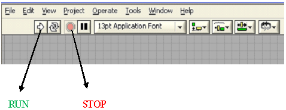

Shakshat Virtual Lab 
INDIAN INSTITUTE OF TECHNOLOGY GUWAHATI
Determination of Dynamic Performance Characteristics of Higher Order Systems
Procedure
1.For time domain response, click time domain from the tab selection.
2.Select test signal like impulse, step or ramp.
3.Select the system transfer function.
4.Enter the coefficient of the differential equations.
5.Run the experiment by clicking "" button and observe the response.
6.Stop the experiment by clicking "" button.
7. For frequency response, select the frequency domain tab from tab selection.
8. Repeat step 2 to 6.
9. Stop the experiment by clicking "" button.
Copyright IIT GUWAHATI | Developed By CSE DEPARTMENT